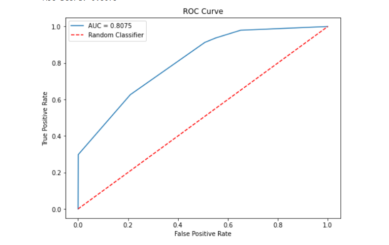
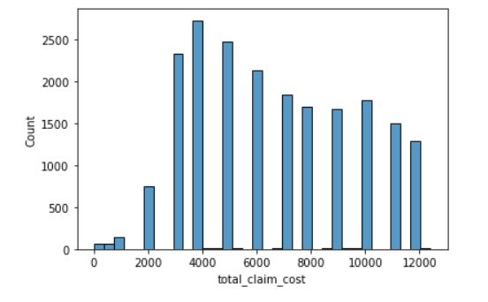
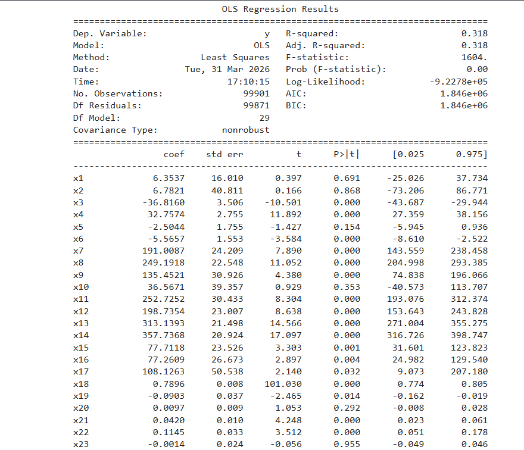

For this project I am using synthetic data from CMS.gov. The purpose is to model and predict insurance claims and claim amounts based on health factors.
First, I examined the breakdown of key categorical variables like sex, race, and age. I then looked at the distribution of the dependent variable. I realized that a few claims were much bigger than all the others, some were less than 0, but most were 0. I decided to use the interquartile range to find and remove outliers, and also got rid of negative claim amounts. Next, I looked at null values. There was one column (death date) where the vast majority were NA, to the point where including it in my analysis would just add noise. I decided to drop that column, and I was done with all of the null values. Next I wanted to change birth date to age so that I could have a number to include in my regression. I noticed that all of them were coded to be born on the first of the month, so I just used month and year. Next, I went through the categorical columns and removed the ones like county or state code that would not be useful in my regression. I also found that some binary columns were coded as {1: Yes, 2: No} as opposed to {1: Yes, 2: No}, so I re-mapped those. I created dummies where needed and dropped reference categories. Finally, I noticed that some columns were heavily correlated because of their real-world interpretation, and dropped one to improve my estimation.
For the first regression model, I used standard linear regression. First I used the built-in OLS function from statsmodels to compare against, then I replicated the results manually using numpy. This model has an R2 of 0.318. Despite the decent performance, I wouldn't use this if I wanted to find strictly unbiased coefficient estimates, because of likely endogeneity concerns. I also used two ML methods, XGBoost and Random Forest to see if I could improve on my OLS estimates.
I also wanted to see if I could predict whether a person would have a positive claim amount. For this I used the same XGBoost and Random Forest techniques, this time the classification option, and standard logistic regression. I found this time that XGBoost performed the best (based on the AUC score), and I believe that I could further improve the performance of the ML models with hyperparameter tuning.


